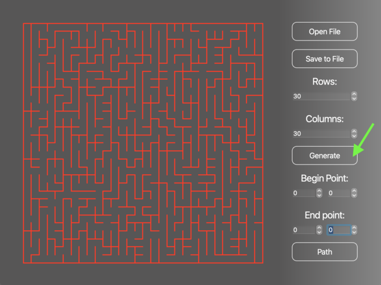
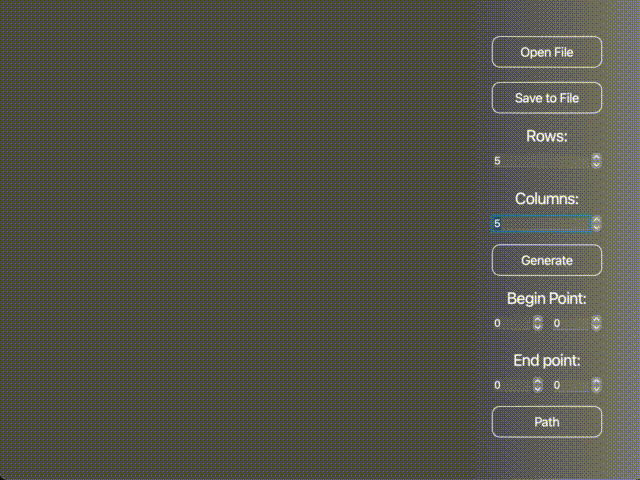
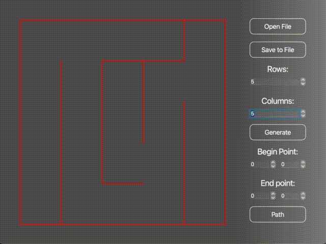

developed on C++17 language with QT Creator
This program is made for MacOS. You can install it to your Mac by implementing "make" command in the command line.
The program can generate ideal mazes with Eller's alhoritm. You can enter size of the maze and press "generate" button:
Also you can upload some saved maze from .txt file and save your maze to .txt file:
You can find the path from one cell to another:
